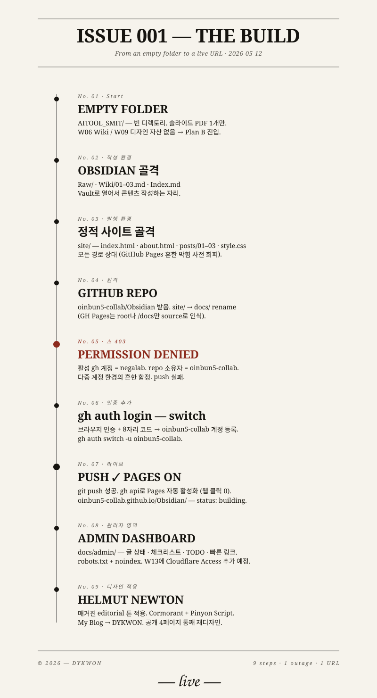

From Empty Folder
to Live URL
한 시간 전엔 빈 디렉토리. 한 시간 후엔 라이브 URL. 그 사이에 무슨 일이 있었는지를, 매거진의 첫 페이지처럼 펼쳐둔다. 기록되지 않은 작업은 다음에 또 헤매게 되므로.

The Build, Vertical. 9개 단계, 1번의 장애 (403 권한 충돌),
그리고 한 개의 URL. 화살표를 빼고 점과 라인만 남겼다 — 시간은
아래로 흐른다.
9
Steps
1
Outage
13
Files
~30
Minutes
오늘 배운 한 가지
가장 시간이 오래 걸린 단계는 코드가 아니라 권한이었다.
활성 gh 계정과 repo 소유자가 어긋나 push가 막힌 순간 —
그곳에서 약 5분이 사라졌다. 다음 번엔 첫 환경 점검
(gh auth status)에서 미리 잡으면 5초로 끝난다.
왜 이 글을 남기는가
다른 학생 한 명이 이 작업의 HANDOFF.md를 자기 AI에 넣었더니 누락됐던 본문이 채워져 사이트에 올라갔다. 핸드오프 문서가 사람이 아니라 다른 AI에게 직접 읽히는 컨텍스트로 작동한 첫 검증. 이 다이어그램도 같은 의도다 — 글 하나가 다음 사이클의 입력이 되도록.
다음 사이클
- W11 — 운영 6대 습관 · OpenRouter · 슬래시 커맨드
- W12 — 디자인 / 기능 v3
- W13 — Cloudflare 도메인 + Access (admin 잠금)
- W14 — 데이터 기반 v4
- W15 — 사이트 오픈 + 피치